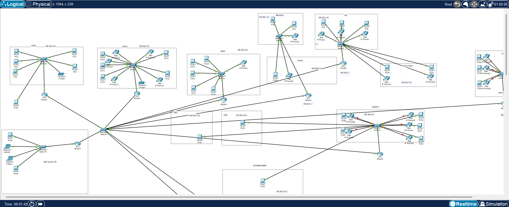

About Me
I am a Network Engineer with a strong interest in cybersecurity and infrastructure optimization. I specialize in configuring and troubleshooting network devices, managing VLANs, DHCP, VPNs, and implementing secure routing protocols. I also explore security vulnerabilities using tools in Kali Linux and scripts developed in Python, continuously expanding my knowledge in real-world threat analysis and defense.
Projects
Enterprise Network Design
This design simulates an enterprise network using Cisco Packet Tracer, featuring multi-VLAN configuration, OSPF routing, DHCP relay, and ACLs for traffic control across multiple international office locations.
Lottery Tool

This tool analyzes lottery PDFs to identify number patterns and trends using Python and data parsing techniques in Kali Linux.
Vulnerability Scanner

A tool that scans websites for common vulnerabilities including SQL injection and XSS, helping administrators secure their applications.
Contact
Email: sreelalnet@gmail.com
GitHub: github.com/turtle-txt.github.io